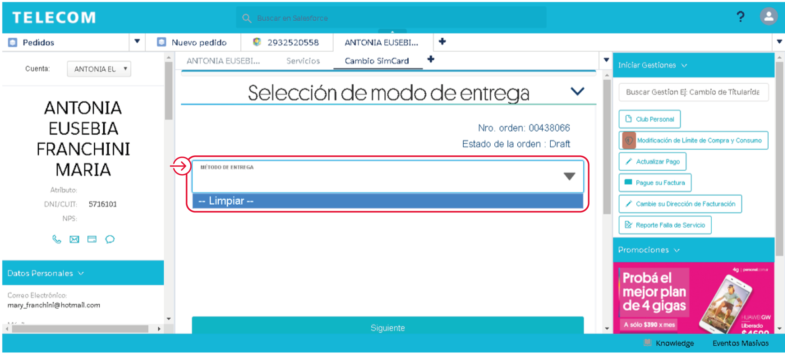

Recordemos lo que vimos anteriormente:
¿Cómo cancelo una gestión?
Estando dentro de la gestión, podrás cancelarla presionando el botón “Cancelar” que figura abajo a la derecha de cada pantalla durante el paso a paso:
Si ya cerramos la pestaña y estamos fuera de la gestión, podremos cancelar los pedidos pendientes de dos maneras:
Este botón te llevará a las últimas gestiones cargadas a nivel línea y te mostrará el estado de cada una de ellas. Podrás ingresar haciendo click sobre el número de gestión:
Una vez que estemos dentro de la gestión, seleccionaremos el botón “Cancelar Orden”:
El CRM nos confirmará la cancelación y deberemos clickear en Aceptar.
Si volvemos al listado de Gestiones veremos que esta se canceló correctamente:
Tendrás que ingresar a cada Pedido en estado “Iniciado” y cancelarlos para poder cargar una nueva gestión.
En este caso también tendrás que ingresar a cada Pedido en estado “Iniciado” y cancelarlos para poder cargar una nueva gestión.
Error en gestión Cambio de SIM
Si al cargar un Cambio de SIM no permite elegir un método de entrega, significa que hay pedidos en Estado Inicial que debemos cancelar.
